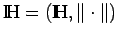

Unitäre Räume und einige ihrer Eigenschaften
Mit Hilfe des Skalarprodukts kann man in einem Prä-HILBERT-Raum durch die Festlegung
eine Norm erzeugen. Ein normierter Raum  heißt unitär, wenn man in ihm ein Skalarprodukt einführen kann, das mit der Norm durch (12.108) verknüpft ist. Im unitären Raum gelten aufgrund des Vorhandenseins des Skalarprodukts und der Verknüpfung (12.108) die folgenden bemerkenswerten Eigenschaften:
- 1. Dreiecksungleichung:
-
- 2. Cauchy-Schwarzsche oder Schwarz-Bunjakowskische Ungleichung:
-
- 3. Parallelogrammgleichung:
- In der Klasse aller normierten Räume charakterisiert sie die unitären Räume.
- 4. Stetigkeit des Skalarprodukts:
-